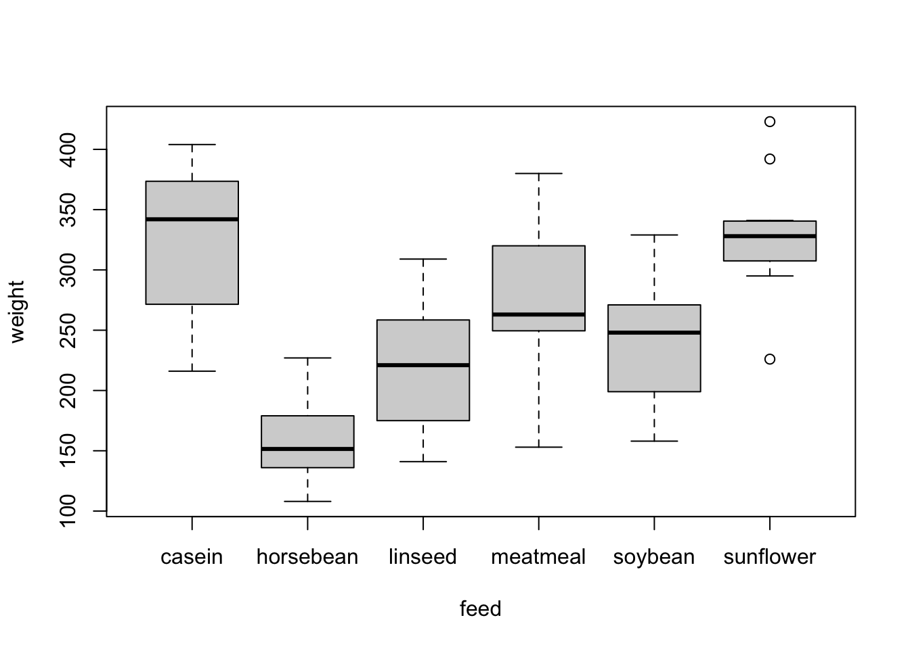
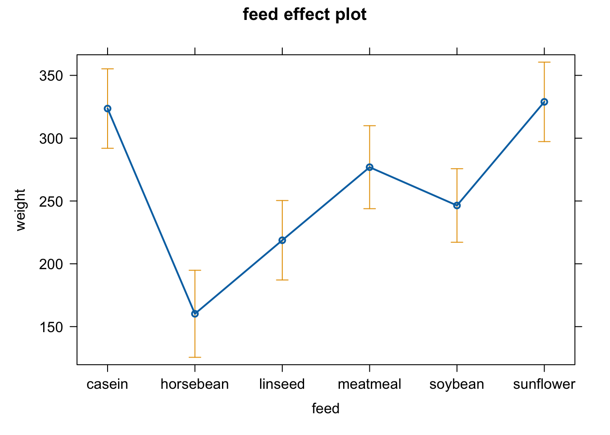
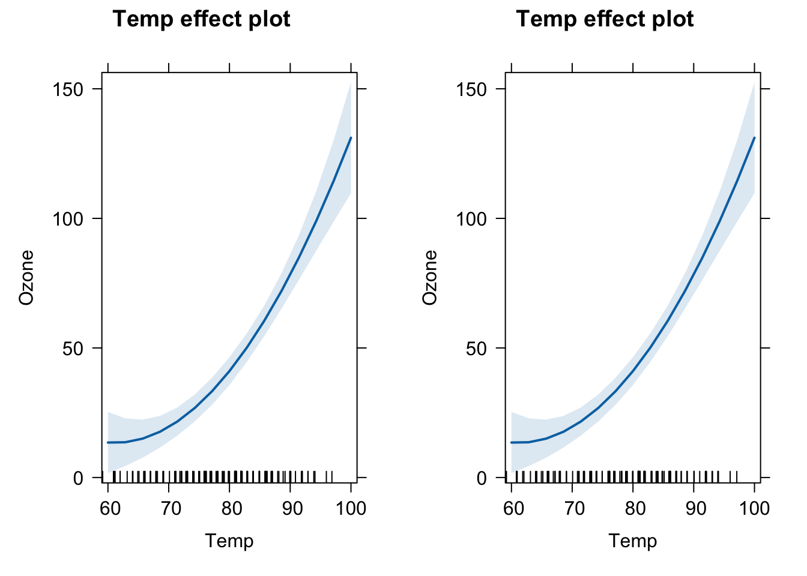
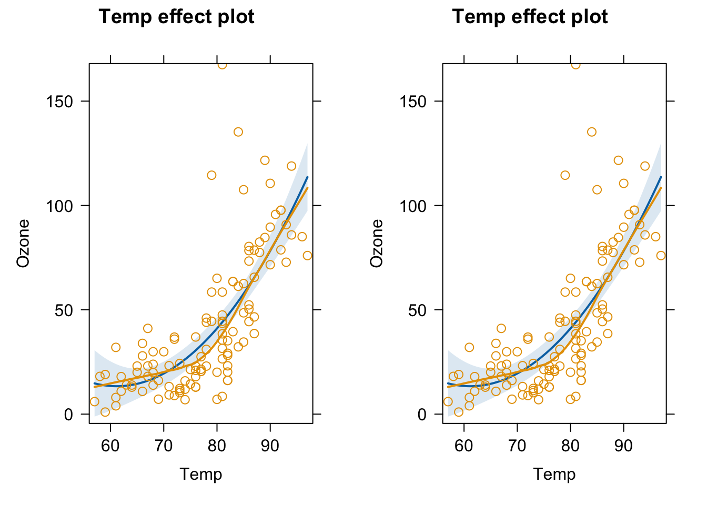

perform simple linear regression for numeric and categorical predictors
interpret regression outputs
check the residuals of regression models
7.1 Maximum Likelihood Estimator
\(likelihood = P(D|model, parameter)\)
The likelihood is the probability to observe the Data given a certain model (which is described by its parameter).
It is an approach to optimize a model/parameter to find the set of parameters that describes best the observed data.
A simple example, we want to estimate the average of random vectors and we assume that our model is a normal distribution (so we assume that the data originated from a normal distribution). We want to optimize the two parameters that describe a normal distribution: the mean, and the sd:
Xobs =rnorm(100, sd =1.0)# Now we assume that mean = 0, and sd = 0.2 are unknown but we want to find them, let's write the likelihood function:likelihood =function(par) { # we give two parameters, mean and sd lls =dnorm(Xobs, mean = par[1], sd = par[2], log =TRUE) # calculate for each observation to observe the data given our model# we use the logLikilihood for numerical reasonsreturn(sum(lls))}likelihood(c(0, 0.2))## [1] -1274.247# let's try all values of sd:likelihood_mean =function(p) likelihood(c(p, 1.0))plot(seq(-5, 5.0, length.out =100), sapply(seq(-5, 5.0, length.out =100), likelihood_mean), xlab ='Different mean values', ylab ="negative logLikelihood")
# The optimum is at 0, which corresponds to our mean we used to sample Xobs
However it is tedious to try all values manually to find the best value, especially if we have to optimize several values. For that we can use an optimizer in R which finds for us the best set of parameters:
We can use the shape of the likelihood to calculate standard errors for our estimates:
st_errors =sqrt(diag(solve(opt$hessian)))
With that we can calculate the confidence interval for our estimates. When the estimator is repeatedly used, 95% of the calculated confidence intervals will include the true value!
In short, if we would do a t.test for our Xobs (to test whether the mean is stat. significant different from zero), the test would be non significant, and a strong indicator for that is when the 0 is within the confidence interval. Let’s compare our CI to the one calculated by the t-test:
t.test(Xobs)## ## One Sample t-test## ## data: Xobs## t = 0.31224, df = 99, p-value = 0.7555## alternative hypothesis: true mean is not equal to 0## 95 percent confidence interval:## -0.1741130 0.2391426## sample estimates:## mean of x ## 0.03251482
Almost the same! The t-test also calculates the MLE to get the standard error and the confidence interval.
7.2 The theory of linear regression
If we want to test for an association between two continuous variables, we can calculate the correlation between the two - and with the cor.test function we can test even for significance. But, the correlation doesn’t report the magnitude, the strength, of the effect:
X =runif(100)par(mfrow =c(1,1))plot(X, 0.5*X, ylim =c(0, 1), type ="p", pch =15, col ="red", xlab ="X", ylab ="Y")points(X, 1.0*X, ylim =c(0, 1), type ="p", pch =15, col ="blue", xlab ="X", ylab ="Y")
cor(X, 0.5*X)## [1] 1cor(X, 1.0*X)## [1] 1
Both have a correlation factor of 1.0! But we see clearly that the blue line has an stronger effect on Y then the red line.
Solution: Linear regression models
They describe the relationship between a dependent variable and one or more explanatory variables:
plot(X, 0.5*X, ylim =c(0, 1), type ="p", pch =16, col ="black", xlab ="X", ylab ="Y", lwd =1.5)points(X, 0.5*X, col ="red", type ="l", lwd =1.5)points(X, 1.0*X, ylim =c(0, 1), type ="p", pch =16, col ="black", xlab ="X", ylab ="Y", lwd =1.5)points(X, 1.0*X, ylim =c(0, 1), type ="l", pch =16, col ="blue", xlab ="X", ylab ="Y", lwd =1.5)legend("topleft", col =c("red", "blue"), lty =1,legend =c('Y = 0.5*X+0', 'Y = 1.0**X+0'))
We can get the parameters (slope and intercept) with the MLE. However, we need first to make another assumptions, usually the model line doesn’t perfectly the data because there is an observational error on Y, so the points scatter around the line:
plot(X, 0.5*X+rnorm(100, sd =0.05), ylim =c(0, 1), type ="p", pch =16, col ="black", xlab ="X", ylab ="Y", lwd =1.5)points(X, 0.5*X, col ="red", type ="l", lwd =1.5)points(X, 1.0*X+rnorm(100, sd =0.05), ylim =c(0, 1), type ="p", pch =16, col ="black", xlab ="X", ylab ="Y", lwd =1.5)points(X, 1.0*X, ylim =c(0, 1), type ="l", pch =16, col ="blue", xlab ="X", ylab ="Y", lwd =1.5)legend("topleft", col =c("red", "blue"), lty =1,legend =c('Y = 0.5*X+0', 'Y = 1.0**X+0'))
Which is very similar to our previous MLE, right? The only difference is now that the mean depends now on x, let’s optimize it again:
Xobs =rnorm(100, sd =1.0)Y = Xobs +rnorm(100,sd =0.2)likelihood =function(par) { # three parameters now lls =dnorm(Y, mean = Xobs*par[2]+par[1], sd = par[3], log =TRUE) # calculate for each observation the probability to observe the data given our model# we use the logLikilihood because of numerical reasonsreturn(sum(lls))}likelihood(c(0, 0, 0.2))## [1] -1162.229opt =optim(c(0.0, 0.0, 1.0), fn =function(par) -likelihood(par), hessian =TRUE )opt$par## [1] 0.002927292 0.997608527 0.216189328
Our true parameters are 0.0 for the intercept, 1.0 for the slope, and 0.22 for the sd of the observational error.
Now, we want to test whether the effect (slope) is statistically significant different from 0:
The p-value is smaller than \(\alpha\), so the effect is significant! However, it would be tedious to do that always by hand, and because it is probably one of the most used analysis, there’s a function for it in R:
model =lm(Y~Xobs) # 1. Get estimates, MLEmodel## ## Call:## lm(formula = Y ~ Xobs)## ## Coefficients:## (Intercept) Xobs ## 0.002927 0.997569summary(model) # 2. Calculate standard errors, CI, and p-values## ## Call:## lm(formula = Y ~ Xobs)## ## Residuals:## Min 1Q Median 3Q Max ## -0.49919 -0.13197 -0.01336 0.14239 0.64505 ## ## Coefficients:## Estimate Std. Error t value Pr(>|t|) ## (Intercept) 0.002927 0.021838 0.134 0.894 ## Xobs 0.997569 0.022490 44.355 <2e-16 ***## ---## Signif. codes: 0 '***' 0.001 '**' 0.01 '*' 0.05 '.' 0.1 ' ' 1## ## Residual standard error: 0.2184 on 98 degrees of freedom## Multiple R-squared: 0.9526, Adjusted R-squared: 0.9521 ## F-statistic: 1967 on 1 and 98 DF, p-value: < 2.2e-16
7.3 Understanding the linear regression
Besides the MLE, there are also several tests in a regression. The most important are
significance of each parameter. t-test: H0 = variable has no effect, that means the estimator for the parameter is 0
significance of the model. F-test: H0 = none of the explanatory variables has an effect, that means all estimators are 0
Example:
pairs(airquality)
# first think about what is explanatory / predictor # and what is the dependent variable (e.g. in Ozone and Temp)# par(mfrow = c(1, 1))plot(Ozone ~ Temp, data = airquality)
fit1 =lm(Ozone ~ Temp, data = airquality)summary(fit1)## ## Call:## lm(formula = Ozone ~ Temp, data = airquality)## ## Residuals:## Min 1Q Median 3Q Max ## -40.729 -17.409 -0.587 11.306 118.271 ## ## Coefficients:## Estimate Std. Error t value Pr(>|t|) ## (Intercept) -146.9955 18.2872 -8.038 9.37e-13 ***## Temp 2.4287 0.2331 10.418 < 2e-16 ***## ---## Signif. codes: 0 '***' 0.001 '**' 0.01 '*' 0.05 '.' 0.1 ' ' 1## ## Residual standard error: 23.71 on 114 degrees of freedom## (37 observations deleted due to missingness)## Multiple R-squared: 0.4877, Adjusted R-squared: 0.4832 ## F-statistic: 108.5 on 1 and 114 DF, p-value: < 2.2e-16# gives a negative values for the intercept = negative Ozone levels when Temp = 0# this does not make sense (>extrapolation)# we can also fit a model without intercept, # without means: intercept = 0; y = a*x # although this doesn't make much sense herefit2 =lm(Ozone ~ Temp -1, data = airquality)summary(fit2)## ## Call:## lm(formula = Ozone ~ Temp - 1, data = airquality)## ## Residuals:## Min 1Q Median 3Q Max ## -38.47 -23.26 -12.46 15.15 121.96 ## ## Coefficients:## Estimate Std. Error t value Pr(>|t|) ## Temp 0.56838 0.03498 16.25 <2e-16 ***## ---## Signif. codes: 0 '***' 0.001 '**' 0.01 '*' 0.05 '.' 0.1 ' ' 1## ## Residual standard error: 29.55 on 115 degrees of freedom## (37 observations deleted due to missingness)## Multiple R-squared: 0.6966, Adjusted R-squared: 0.6939 ## F-statistic: 264 on 1 and 115 DF, p-value: < 2.2e-16plot(Ozone ~ Temp, data = airquality, xlim =c(0,100), ylim =c(-150, 150))abline(fit1, col ="green")abline(fit2, col ="red", lty =2)
# there is no need to check normality of Ozonehist(airquality$Ozone) # this is not normal, and that's no problem !
7.3.1 Model diagnostics
The regression optimizes the parameters under the condition that the model is correct (e.g. there is really a linear relationship). If the model is not specified correctly, the parameter values are still estimated - to the best of the model’s ability, but the result will be misleading, e.g. p-values and effect sizes
What could be wrong:
the distribution (e.g. error not normal)
the shape of the relationship between explanatory variable and dependent variable (e.g., could be non-linear)
The model’s assumptions must always be checked!
We can check the model by looking at the residuals (which are predicted - observed values) which should be normally distributed and should show no patterns:
X =runif(50)Y = X +rnorm(50, sd =0.2)fit =lm(Y~X)par(mfrow =c(1, 3))plot(X, Y)abline(fit, col ="red")plot(X, predict(fit) - Y, ylab ="Residuals")abline(h =0, col ="red")hist(predict(fit) - Y, main ="", xlab ="Residuals")
par(mfrow =c(1,1))
The residuals should match the model assumptions. For linear regression:
# residuals are not normally distributed# we do not use a test for this, but instead look at the residuals visually# let's plot residuals versus predictorplot(airquality$Temp[!is.na(airquality$Ozone)], residuals(fit1))
# model checking plotsoldpar=par(mfrow =c(2,2))plot(fit1)
par(oldpar)#> there's a pattern in the residuals > the model does not fit very well!
7.3.2 Linear regression with a categorical variable
We can also use categorical variables as an explanatory variable:
m =lm(weight~group, data = PlantGrowth)summary(m)## ## Call:## lm(formula = weight ~ group, data = PlantGrowth)## ## Residuals:## Min 1Q Median 3Q Max ## -1.0710 -0.4180 -0.0060 0.2627 1.3690 ## ## Coefficients:## Estimate Std. Error t value Pr(>|t|) ## (Intercept) 5.0320 0.1971 25.527 <2e-16 ***## grouptrt1 -0.3710 0.2788 -1.331 0.1944 ## grouptrt2 0.4940 0.2788 1.772 0.0877 . ## ---## Signif. codes: 0 '***' 0.001 '**' 0.01 '*' 0.05 '.' 0.1 ' ' 1## ## Residual standard error: 0.6234 on 27 degrees of freedom## Multiple R-squared: 0.2641, Adjusted R-squared: 0.2096 ## F-statistic: 4.846 on 2 and 27 DF, p-value: 0.01591
The lm estimates an effect/intercept for each level in the categorical variable. The first level of the categorical variable is used as a reference, i.e. the true effect for grouptrt1 is Intercept+grouptrt1 = 4.661 and grouptrt2 is 5.5242. Moreover, the lm tests for a difference of the reference to the other levels. So with this model we know whether the control is significant different from treatment 1 and 2 but we cannot say anything about the difference between trt1 and trt2.
If we are interested in testing trt1 vs trt2 we can, for example, change the reference level of our variable:
tmp = PlantGrowthtmp$group =relevel(tmp$group, ref ="trt1")m =lm(weight~group, data = tmp)summary(m)## ## Call:## lm(formula = weight ~ group, data = tmp)## ## Residuals:## Min 1Q Median 3Q Max ## -1.0710 -0.4180 -0.0060 0.2627 1.3690 ## ## Coefficients:## Estimate Std. Error t value Pr(>|t|) ## (Intercept) 4.6610 0.1971 23.644 < 2e-16 ***## groupctrl 0.3710 0.2788 1.331 0.19439 ## grouptrt2 0.8650 0.2788 3.103 0.00446 ** ## ---## Signif. codes: 0 '***' 0.001 '**' 0.01 '*' 0.05 '.' 0.1 ' ' 1## ## Residual standard error: 0.6234 on 27 degrees of freedom## Multiple R-squared: 0.2641, Adjusted R-squared: 0.2096 ## F-statistic: 4.846 on 2 and 27 DF, p-value: 0.01591
Another example:
library(effects)## Loading required package: carData## lattice theme set by effectsTheme()## See ?effectsTheme for details.library(jtools)summary(chickwts)## weight feed ## Min. :108.0 casein :12 ## 1st Qu.:204.5 horsebean:10 ## Median :258.0 linseed :12 ## Mean :261.3 meatmeal :11 ## 3rd Qu.:323.5 soybean :14 ## Max. :423.0 sunflower:12plot(weight ~ feed, chickwts)
fit4 =lm(weight ~ feed, chickwts)summary(fit4)## ## Call:## lm(formula = weight ~ feed, data = chickwts)## ## Residuals:## Min 1Q Median 3Q Max ## -123.909 -34.413 1.571 38.170 103.091 ## ## Coefficients:## Estimate Std. Error t value Pr(>|t|) ## (Intercept) 323.583 15.834 20.436 < 2e-16 ***## feedhorsebean -163.383 23.485 -6.957 2.07e-09 ***## feedlinseed -104.833 22.393 -4.682 1.49e-05 ***## feedmeatmeal -46.674 22.896 -2.039 0.045567 * ## feedsoybean -77.155 21.578 -3.576 0.000665 ***## feedsunflower 5.333 22.393 0.238 0.812495 ## ---## Signif. codes: 0 '***' 0.001 '**' 0.01 '*' 0.05 '.' 0.1 ' ' 1## ## Residual standard error: 54.85 on 65 degrees of freedom## Multiple R-squared: 0.5417, Adjusted R-squared: 0.5064 ## F-statistic: 15.36 on 5 and 65 DF, p-value: 5.936e-10anova(fit4) #get overall effect of feeding treatment## Analysis of Variance Table## ## Response: weight## Df Sum Sq Mean Sq F value Pr(>F) ## feed 5 231129 46226 15.365 5.936e-10 ***## Residuals 65 195556 3009 ## ---## Signif. codes: 0 '***' 0.001 '**' 0.01 '*' 0.05 '.' 0.1 ' ' 1plot(allEffects(fit4))
plot(allEffects(fit4, partial.residuals = T))
effect_plot(fit4, pred = feed, interval =TRUE, plot.points = F)
## what does simple linear regression mean?# simple = one predictor!# linear = linear in the parameters# a0 + a1 * x + a2 * x^2 # even if we add a quadratic term, this is a linear combination# this is called polynomialfit3 =lm(Ozone ~ Temp +I(Temp^2), data = airquality)summary(fit3)## ## Call:## lm(formula = Ozone ~ Temp + I(Temp^2), data = airquality)## ## Residuals:## Min 1Q Median 3Q Max ## -37.619 -12.513 -2.736 9.676 123.909 ## ## Coefficients:## Estimate Std. Error t value Pr(>|t|) ## (Intercept) 305.48577 122.12182 2.501 0.013800 * ## Temp -9.55060 3.20805 -2.977 0.003561 ** ## I(Temp^2) 0.07807 0.02086 3.743 0.000288 ***## ---## Signif. codes: 0 '***' 0.001 '**' 0.01 '*' 0.05 '.' 0.1 ' ' 1## ## Residual standard error: 22.47 on 113 degrees of freedom## (37 observations deleted due to missingness)## Multiple R-squared: 0.5442, Adjusted R-squared: 0.5362 ## F-statistic: 67.46 on 2 and 113 DF, p-value: < 2.2e-16oldpar=par(mfrow =c(2,2))plot(fit3)

par(oldpar)# Residual vs. fitted looks okay, but Outliers are still there, and additionally# too wide. But for now, let's plot prediction with uncertainty (plot line plus confidence interval)plot(Ozone ~ Temp, data = airquality)# if the relationship between x and y is not linear, we cannot use abline# instead we predict values of x for different values of y based on the model newDat =data.frame(Temp =55:100)predictions =predict(fit3, newdata = newDat, se.fit = T)# and plot these into our figure:lines(newDat$Temp, predictions$fit, col="red")# let's also plot the confidence intervals:lines(newDat$Temp, predictions$fit +1.96*predictions$se.fit, col="red", lty =2)lines(newDat$Temp, predictions$fit -1.96*predictions$se.fit, col="red", lty =2)# add a polygon (shading for confidence interval)x =c(newDat$Temp, rev(newDat$Temp))y =c(predictions$fit -1.96*predictions$se.fit, rev(predictions$fit +1.96*predictions$se.fit))polygon(x,y, col="#99009922", border = F )

# alternative: use package effects#install.packages("effects")library(effects)plot(allEffects(fit3))

plot(allEffects(fit3, partial.residuals = T))

#to check patterns in residuals (plots measurements and partial residuals)# or jtools packagelibrary(jtools)effect_plot(fit3, pred = Temp, interval =TRUE, plot.points =TRUE)
7.4 Exercises
You will work with the following datasets:
regrowth {EcoData}
birdabundance {EcoData}
simulated data
7.4.1 Analyzing the “regrowth” dataset
Imagine you have a garden with some fruit trees and you were thinking of adding some berry bushes between them. However, you don’t want them to suffer from malnutrition so you want to estimate the volume of root biomass as a function of the fruit biomass.
Carry out the following tasks
Perform a simple linear regression for the influence of fruit biomass on root biomass.
Visualize the data and add the regression line to the plot.
This is the code that you need to interpret the results.
library(EcoData)# simple linear regressionfit <-lm(Root ~ Fruit, data = regrowth)# check summary for regression coefficient and p-valuesummary(fit)## ## Call:## lm(formula = Root ~ Fruit, data = regrowth)## ## Residuals:## Min 1Q Median 3Q Max ## -1.25105 -0.69970 -0.01755 0.66982 1.63933 ## ## Coefficients:## Estimate Std. Error t value Pr(>|t|) ## (Intercept) 4.184256 0.337987 12.380 6.6e-15 ***## Fruit 0.050444 0.005264 9.584 1.1e-11 ***## ---## Signif. codes: 0 '***' 0.001 '**' 0.01 '*' 0.05 '.' 0.1 ' ' 1## ## Residual standard error: 0.8111 on 38 degrees of freedom## Multiple R-squared: 0.7073, Adjusted R-squared: 0.6996 ## F-statistic: 91.84 on 1 and 38 DF, p-value: 1.099e-11# plot root explained by fruit biomassplot(Root ~ Fruit, data = regrowth, ylab ="Root biomass in cubic meters",xlab ="Fruit biomass in g")abline(fit) # add regression lineabline(v =70, col ="purple") # add line at x value (here fruit biomass of 70g)abline(h =4.184256+0.050444*70, col ="brown") # add line at y value according to x = 70 using the intercept and regression coefficient of x
7.4.2 Analyzing the “birdabundance” dataset
The dataset provides bird abundances in forest fragments with different characteristics in Australia. We want to look at the relationship of the variables “abundance”, “distance” and “grazing”.
Questions
First, answer the following questions on elearning-extern (Q 2-4):
What is the most reasonable research question regarding these variables?
What is the response variable?
What is the predictor variable?
Then, perform the following tasks:
Fit a simple linear regression relating the response variable to the categorical predictor (that is the one with five levels, make sure that it is indeed a factor using as.factor())
Apply an ANOVA to your model.
You may need the following functions:
lm()
summary()
anova()
Use your results to chose the correct statement(s) on elearning-extern (Q5).
Solution
A reasonable research question is how abundance is influenced by distance and/or grazing. Here, the response variable is abundance, while the predictors are distance and/or grazing.
This is the code that you need to interpret the results.
# change variable from integer to factorbirdabundance$GRAZE <-as.factor(birdabundance$GRAZE) fit <-lm(ABUND ~ GRAZE, data = birdabundance)summary(fit)## ## Call:## lm(formula = ABUND ~ GRAZE, data = birdabundance)## ## Residuals:## Min 1Q Median 3Q Max ## -18.3867 -4.1159 0.0269 5.1484 16.4133 ## ## Coefficients:## Estimate Std. Error t value Pr(>|t|) ## (Intercept) 28.623 2.086 13.723 < 2e-16 ***## GRAZE2 -6.673 3.379 -1.975 0.0537 . ## GRAZE3 -7.336 2.850 -2.574 0.0130 * ## GRAZE4 -8.052 3.526 -2.284 0.0266 * ## GRAZE5 -22.331 2.950 -7.571 6.85e-10 ***## ---## Signif. codes: 0 '***' 0.001 '**' 0.01 '*' 0.05 '.' 0.1 ' ' 1## ## Residual standard error: 7.52 on 51 degrees of freedom## Multiple R-squared: 0.5449, Adjusted R-squared: 0.5092 ## F-statistic: 15.27 on 4 and 51 DF, p-value: 2.846e-08# anova to check global effect of the factor grazing intensityanova(fit)## Analysis of Variance Table## ## Response: ABUND## Df Sum Sq Mean Sq F value Pr(>F) ## GRAZE 4 3453.7 863.42 15.267 2.846e-08 ***## Residuals 51 2884.2 56.55 ## ---## Signif. codes: 0 '***' 0.001 '**' 0.01 '*' 0.05 '.' 0.1 ' ' 1# boxplotplot(ABUND ~ GRAZE, data = birdabundance)
7.4.3 Model validation: Residual checks
Now, we will have a closer look at model diagnostics and residual checks in particular. Of course, we should have done this for all models above as well (we simply didn’t do this because of time restrictions). So remember that you always have to validate your model, if you want to be sure that your conclusions are correct.
For this exercise, you can prepare a dataset yourself called “dat” with the variables “x” and “y”. Simply copy the following code to generate the data:
Perform another simple linear regression with a modified formula, if needed.
Create a scatter plot of the data and add a regression line for the first fit in black and one for the second fit in red. The second model cannot be plotted with the abline() function. Use the following code instead:
lines(sort(x), predict(fit2, newdata =data.frame(x =sort(x))), col ="red")
You may also need the following functions:
lm()
summary()
par(mfrow = c(2, 2))
plot()
abline()
Use your results to answer the following questions on elearning-extern (Q 6-8).
Question
What pattern do the residuals of the first regression model show when plotted against the fitted values?
What do you have to do to improve your first regression model?
Identify the correct statement(s) about the residuals of the modified model.
Solution
set.seed(234)x =rnorm(40, mean =10, sd =5)y =10-2*x +0.9* x^2+rnorm(40, mean=5, sd =20)dat <-data.frame(x, y)# simple linear regressionfit <-lm(y ~ x, dat)# check residualsop =par(mfrow=c(2,2))plot(fit) # residuals show a parabolic relationship (see first plot) -> to improve, fit a quadratic relationship
par(op)# scatter plotplot(y ~ x, data = dat)abline(fit)
summary(fit) # significantly positively correlated, but this doesn't tell the full story because the residuals are not okay## ## Call:## lm(formula = y ~ x, data = dat)## ## Residuals:## Min 1Q Median 3Q Max ## -39.884 -22.208 -4.948 10.602 118.164 ## ## Coefficients:## Estimate Std. Error t value Pr(>|t|) ## (Intercept) -8.459 10.973 -0.771 0.446 ## x 11.465 1.019 11.248 1.18e-13 ***## ---## Signif. codes: 0 '***' 0.001 '**' 0.01 '*' 0.05 '.' 0.1 ' ' 1## ## Residual standard error: 32.11 on 38 degrees of freedom## Multiple R-squared: 0.769, Adjusted R-squared: 0.763 ## F-statistic: 126.5 on 1 and 38 DF, p-value: 1.176e-13# improved regression modelfit2 =lm(y ~ x +I(x^2), dat)# check residualsop =par(mfrow=c(2,2))plot(fit2) # no pattern in residuals anymore (first plot) -> fit is fine
par(op)# scatter plotplot(y ~ x, data = dat)abline(fit)lines(sort(x), predict(fit2, newdata =data.frame(x =sort(x))), col ="red")
summary(fit2) # significantly negatively correlated, trustworthy now, because residuals are sufficiently uniformly distributed (first plot in plot(fit2))## ## Call:## lm(formula = y ~ x + I(x^2), data = dat)## ## Residuals:## Min 1Q Median 3Q Max ## -33.174 -11.444 0.938 10.164 40.666 ## ## Coefficients:## Estimate Std. Error t value Pr(>|t|) ## (Intercept) 17.87505 6.00812 2.975 0.00513 ** ## x -1.10100 1.27706 -0.862 0.39417 ## I(x^2) 0.80752 0.07526 10.730 6.49e-13 ***## ---## Signif. codes: 0 '***' 0.001 '**' 0.01 '*' 0.05 '.' 0.1 ' ' 1## ## Residual standard error: 16.05 on 37 degrees of freedom## Multiple R-squared: 0.9438, Adjusted R-squared: 0.9408 ## F-statistic: 310.9 on 2 and 37 DF, p-value: < 2.2e-16